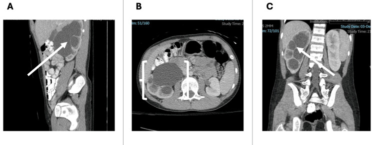

Ficha del catálogo
Estenosis de la unión pieloureteral
- Sistema
- Urinario
- Modalidad
- TC
- Región
- Unión pieloureteral
- Dificultad
- Intermedio
Consiste en una obstrucción funcional o anatómica al paso de la orina desde la pelvis renal hacia el uréter. Es la causa más frecuente de hidronefrosis en la infancia y también se detecta en adultos con dolor lumbar intermitente que empeora tras la ingesta abundante de líquidos. Puede deberse a un segmento adinámico, a bridas fibrosas o a un vaso polar cruzado.
Técnica
El ultrasonido establece la dilatación y sirve para el seguimiento. La urotomografía o la urorresonancia definen el punto de transición y muestran los vasos cruzados antes de la cirugía. La confirmación de que la dilatación es obstructiva corresponde al estudio funcional con radioisótopos y diurético, que valora el drenaje.
Qué observar
- Dilatación de la pelvis y de los cálices con uréter de calibre normal
- Cambio brusco de calibre justo en la unión pieloureteral
- Vaso polar inferior que cruza por delante de la unión
- Grosor del parénquima renal conservado o adelgazado
- Retraso en la aparición de contraste en la fase excretora
- Ausencia de cálculo o de masa que justifique la obstrucción
Hallazgos
Se aprecia un sistema pielocalicial dilatado que termina de forma abrupta en la unión pieloureteral, con un uréter distal fino y bien visible, dato que separa esta entidad de la obstrucción ureteral. La pelvis suele estar desproporcionadamente dilatada respecto a los cálices en las formas extrarrenales. En casos evolucionados el parénquima se adelgaza y la excreción del contraste se retrasa de forma marcada.
Perlas
La clave del diagnóstico es demostrar que el uréter por debajo de la unión tiene calibre normal, porque la dilatación de todo el uréter obliga a buscar la causa en un punto más distal. Además, no toda dilatación implica obstrucción, de modo que la decisión quirúrgica se apoya en la función y el drenaje, no solo en el diámetro.
Diagnóstico diferencial
- Obstrucción ureteral litiásica
- Existe cálculo visible y el uréter aparece dilatado hasta el punto donde se aloja.
- Pelvis extrarrenal prominente
- La pelvis es amplia pero los cálices no están dilatados y el drenaje es normal en el estudio funcional.
- Reflujo vesicoureteral
- Se acompaña de uréter dilatado en todo su trayecto y se demuestra con estudio miccional.
- Megacaliosis congénita
- Hay cálices aumentados en número y tamaño con pelvis normal y sin obstrucción funcional.
Simuladores
- Dilatación fisiológica del embarazo, más marcada en el lado derecho
- Vejiga muy replecionada que produce dilatación transitoria bilateral
- Quistes parapiélicos que remedan un sistema dilatado
Por modalidad
- TC
- Muestra el punto de transición, los vasos cruzados y el estado del parénquima antes de la cirugía.
- US
- Es la técnica inicial y de seguimiento, cuantifica la dilatación y valora el grosor del parénquima sin radiación.
Protocolo
Ultrasonido renal con vejiga en repleción moderada y control tras la micción, midiendo el diámetro anteroposterior de la pelvis y el grosor cortical. La urotomografía o la urorresonancia se reservan para el estudio prequirúrgico e incluyen fase vascular arterial para identificar vasos polares y fase excretora tardía. El estudio funcional con diurético aporta el dato de drenaje y de función diferencial.
Clasificación
En la infancia la dilatación se gradúa según la afectación de la pelvis, de los cálices y del parénquima, desde la dilatación aislada de la pelvis hasta la dilatación de todos los cálices con adelgazamiento cortical. Esa graduación orienta la periodicidad del seguimiento y la indicación de estudio funcional.
Errores frecuentes
- Equiparar dilatación con obstrucción sin valorar el drenaje ni la función
- No comprobar el calibre del uréter por debajo de la unión
- Omitir la búsqueda de vasos cruzados en el estudio previo a la cirugía

unión pieloureteral hidronefrosis vaso polar urotomografía obstrucción pieloplastia pediatría